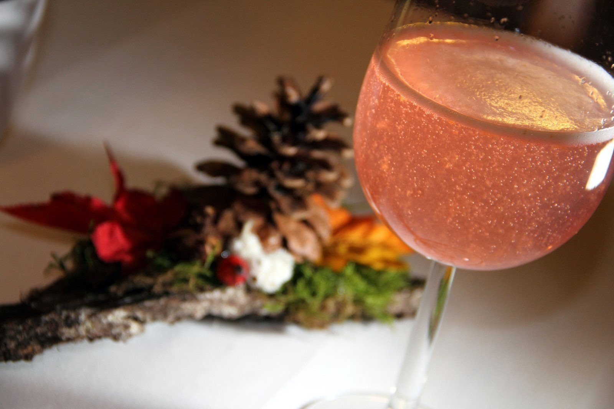

Speise- und Getränkekarte
Eine Auswahl aus unserer Karte
Damit Sie sich schon einen Eindruck von unseren Speisen machen können. Da wir die Auswahl täglich an unsere Produkte anpassen, kann die Karte variieren — lassen Sie sich überraschen.
Am Wochenende bzw. auf Vorbestellung gibt es zusätzlich Bratl aus dem Holzofen und Spezialitäten vom Bio-Almochsen.
Unsere Karte wird täglich aktualisiert und kann somit von dieser abweichen —
lasst euch überraschen! Für Gruppen stellen wir gerne ein eigenes Menü oder Buffet zusammen.
Getränkekarte
Unsere selbstgemachten Kräutersäfte
Genießen Sie unsere erfrischenden Kräutersäfte das ganze Jahr. Aufgespritzt mit Soda oder Leitungswasser sind sie der ideale Durstlöscher.
- Minze
- Melisse
- Lavendel
- Apfelminze
- Duftrosenblüte
- Brennnessel
- Wiesenkracherl (KräuterMix)
- Holunderblüte
- Hopfen-Zitrone
- Ingwer-Zitrone
Für den Genuss zu Hause gibt es die Kräutersäfte in der 0,5-l-Flasche auch zum Mitnehmen.

Spezialitäten
KräuterWirt-Spritzer
Den gibt’s nur bei uns: hausgemachter Holersirup mit Bio-Apfel-Kirschsaft vom
Pankrazhofer, aufgespritzt mit Bio-Speckbirnenfrizzante und Soda, ¼ l
Inge
selbstgemachter Ingwer-Zitronensirup mit Hopfenblüten verfeinert,
Bio-Speckbirnenfrizzante und Soda auf ¼ l
Hugo
Hollersirup, Weißwein, Soda und frische Minze auf ¼ l
… und noch einige mehr.
Fruchtsäfte
Bio-Fruchtsaft vom Pankrazhofer, Tragwein
Apfel naturtrüb · Apfel-Birne
Saft vom Mairinger, Wartberg
Karotte · Johannisbeere
Bier vom Fass
Freistädter Ratsherrn
Funkelndes Gold, vornehmer Glanz, edler Schaum. Distinguierte Nase: neben Hopfen und
Malz noch Spuren von Bergamotte. Antrunk voller Eleganz, weich und rund. Stattlicher
Malzkörper. 12,2° Stammwürze, 5,2 % vol.
Freistädter Bio-Zwickl
Orange mit schöner Zwickltrübung. Voller Duft mit süßen Aromen und Hefenoten.
Gute Rezenz, süffig. Im Finish würfeln Röstaromen und feinbittere Hopfennoten um den Sieg.
11,3° Stammwürze, 4,7 % vol.
Flaschenbier
Freistädter März’n
Glanzfein, golden; weißer, cremiger Schaum. Balancierter Duft, auf die zweite Nase
haben die Malznoten einen kleinen Vorteil. Ausgezeichnete Rezenz, kraftvoller Körper,
delikate Hopfennoten. 11,2° Stammwürze, 4,8 % vol.
Granitbier — Brauerei Hofstetten
Bernsteinfarbenes Spezialbier. Wasser gefiltert durch Mühlviertler Granitgestein,
Pilsner- und Karamellmalze mit Mühlviertler Hopfen. 12,8° Stammwürze, 5,5 % vol.
Mühlviertler Weisse — Neufeldner Bio-Brauerei
Hefetrüb, bernsteinfarben. Weicher, cremiger, extrem feinporiger und stabiler
Schaum. Frischer Antrunk, kraftvoller Körper, angenehme Säure, fruchtsüßes Finish.
12,8° Stammwürze, 5,4 % vol.
Edelweiss Weizen
alkoholfrei, ½ Flasche
Rotwein
Blaufränkisch Classic DAC
WG Reumann Josef, Mittelburgenland — fruchtbetont, würzig, im Edelstahltank
ausgebaut, trocken, 13 % vol.
Zweigelt Bodenschatz 2017
WG Dürnberg, Weinviertel — markante Kirschfrucht mit Cassis-Noten und
Kräuterwürze
Weißwein
Falko Muskateller Cuvée (Mu, WR, SB) 2019
WG Dürnberg, Weinviertel — frisch und duftig, der Frühling im Glas, trocken,
11,5 % vol.
Sämling 88, 2019
WG Tscheppe, Leutschach, Südsteiermark — würziger, fruchtiger Wein, halbtrocken,
12 % vol.
Welschriesling Südsteiermark 2018
WG Skoff, Südsteiermark — animierend, feinnervig im Geschmack, trocken,
11,5 % vol.
Hauswein
Grüner Veltliner Hauswein
WG Überacker, Fels am Wagram — trocken, pfeffriger Landwein, 11,5 % vol.
Zweigelt Hauswein
WG Überacker, Fels am Wagram, NÖ — sortenreiner Qualitätswein, 13 % vol.